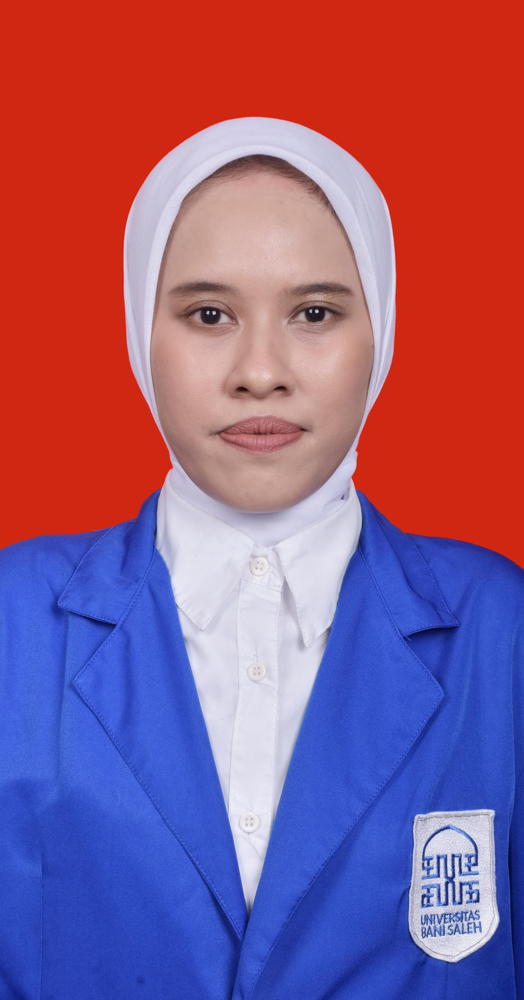
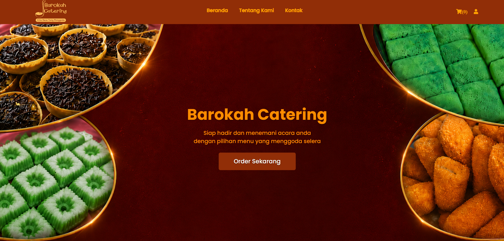
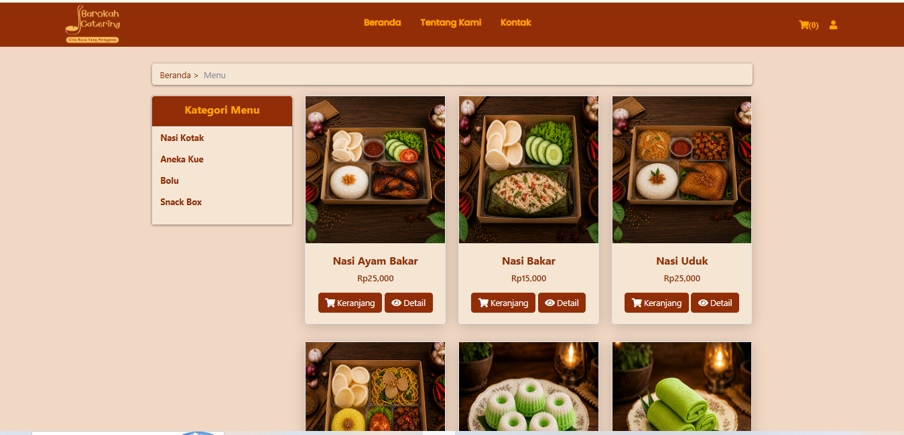
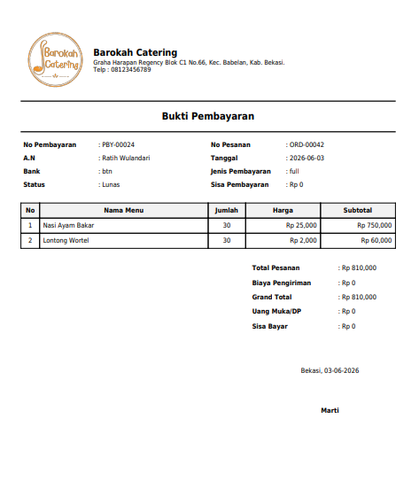
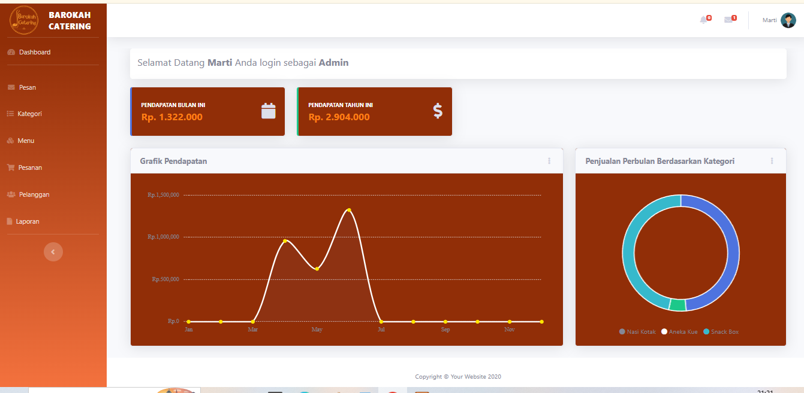
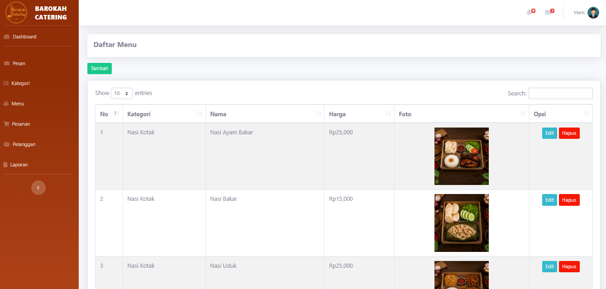

"Berani Mencoba, Siap Berkembang"
Lulusan Sistem Informasi (S.Kom) dengan kombinasi pengalaman kerja profesional di bidang Quality Control & Produksi serta dasar analisis proses bisnis, perancangan sistem informasi, dan pengelolaan data.

Administrasi | Data Entry | IT Support
Saya merupakan Lulusan S1 Sistem Informasi Universitas Bani Saleh (2026) dengan Surat Keterangan Lulus (SKL). Memiliki kombinasi latar belakang pendidikan teknologi informasi dan pengalaman kerja di bidang Quality Control (QC), produksi, dan pengemasan (packing) di industri manufaktur.
Melalui proyek akademik, saya telah memahami dasar analisis proses bisnis, perancangan sistem informasi, serta alur pengembangan website. Saat ini saya terus mengasah kemampuan dalam pengolahan data menggunakan Microsoft Excel. Terbiasa bekerja teliti, disiplin mengikuti SOP, menyusun laporan inspeksi, dan berkoordinasi secara efektif dalam tim.
Pengalaman kerja industri yang membentuk kedisiplinan dan ketelitian tingginya SOP.
PT Aneka Mitra Gemilang
PT Armstrong Industri Indonesia
PT Mayora Indah & PT Tirta Alam Segar
Penerapan analisis sistem informasi untuk menyelesaikan permasalahan nyata pada UMKM.
Mengembangkan solusi digitalisasi pemesanan untuk UMKM Barokah Catering yang sebelumnya mengandalkan pemesanan manual via WhatsApp.
Selesai & Diuji
Dokumentasi tampilan antarmuka dan fitur sistem informasi penjualan UMKM Barokah Catering.

Tampilan utama website sebagai halaman informasi dan akses pemesanan pelanggan.

Menampilkan daftar produk, kategori, harga, dan detail menu.

Dokumentasi transaksi yang memuat rincian pesanan dan informasi pembayaran.

Menampilkan ringkasan pendapatan dan visualisasi data penjualan.

Fitur admin untuk mengubah kategori, nama menu, harga, foto, dan deskripsi produk.
Kombinasi keahlian teknis pengolahan data, analisis sistem, dan operasional manufaktur.
Microsoft Office & Input Data
Analisis Sistem & Control Quality
Universitas Bani Saleh
Jurusan IPA (Ilmu Pengetahuan Alam)
Saya terbuka untuk peluang kerja di bidang Administrasi, Data Entry, IT Support, maupun operasional industri. Jangan ragu untuk menghubungi saya melalui kontak di bawah ini.